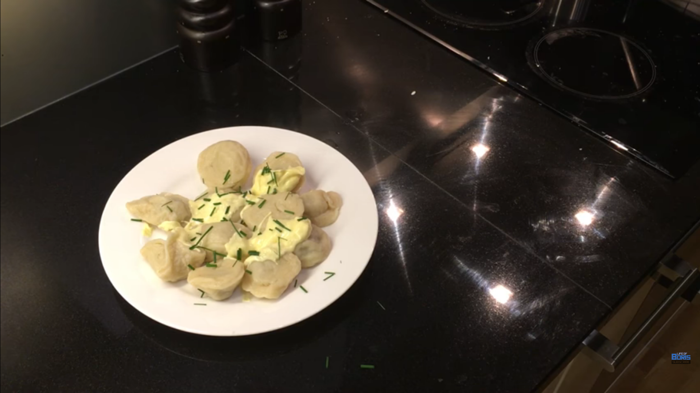

Pelmeni
Back to homepage

Description
Pelmeni are small Russian-style meat dumplings, traditionally
served with sour cream.
Ingredients
Dough:
- 1 egg
- 250ml water
- 2tsp salt
- 300g flour (or as much as it takes to make dough)
Filling:
- 1/2 onion
- 1 garlic clove
- 250g minced meat
- salt
- pepper
Garnish
- Sour cream (or mayonnaise if your name is Boris)
- Dill or green onion
Steps
Dough:
- In a large bowl, add one egg and 250ml water. Whisk the
ingredients.
- Add salt. Continue whisking.
- Add some flour and continue to whisk. Keep adding flour until the
ingredients become dough.
- Remove the dough. On a floured surface, knead the dough for a
minute.
- Cover the dough with a bowl or plastic wrap and let it sit for
20-30 minutes.
Filling:
- Finely chop or blend the onion and garlic. Make the pieces as small
as possible!
- Add minced meat, onion and garlic to a bowl and knead together
with a spoon or your hands.
Making pelmeni:
- Take your dough and roll it out as thinly as possible. It's best to
flour your rolling pin and surface.
- For pelmeni skins, cut out palm-sized circles in the dough using a
cup or something similar.
- Take a circle and put enough meat so that there is enough space
around the edge of the circle.
- Fold the pelmeni skin in half and pinch the edge together.
(Or close it however you like.)
- Repeat from step one to finish making all pelmeni.
- Fill a well-sized pot halfway with water and add salt. Set it to
boil.
- Once the water is at a boil, insert the pelmeni into the water with
a slotted spoon/ladle.
- Boil for 7 minutes, shuffling the pelmeni around occasionally.
- After boiling, scoop out the pelmeni with the slotted spoon/ladle
and put them on a plate.
- Dress the pelmeni with a generous amount of sour cream or mayonnaise
on top, and garnish with a sprinkle of dill or green onion.
Back to homepage